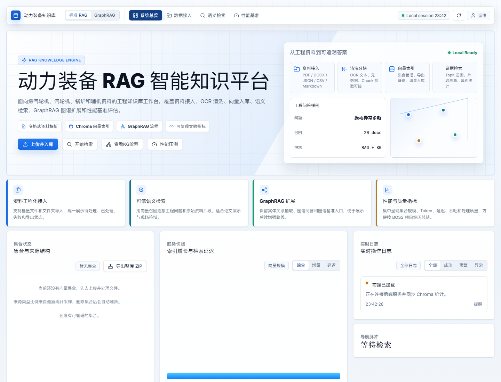

资料入口复杂
扫描件、DOCX、CSV、Markdown 和 Label Studio JSON 需要统一解析。
Live RAG Pipeline
01 / 13把“用户问一句话”拆成可视化后台链路：前端请求、API 编排、资料解析、向量检索、图谱扩展、上下文打包、LLM 生成和证据返回。
系统返回诊断方向、检查证据、来源片段和可复核日志，让回答能追溯到资料，而不是只依赖模型记忆。
Runtime Trace
02 / 13用户输入问题，前端携带 TopK、集合名和检索模式发起请求。
API 层记录日志，启动向量召回、关键词召回和图谱上下文分支。
多路结果合并去重，按问题类型和来源质量选择上下文。
LLM 只基于证据回答，并把句子映射回 chunk 或图谱 evidence。
Problem
03 / 13动力装备领域资料包含扫描 PDF、维修报告、教材、JSON 标注和结构化表格。直接交给大模型容易出现三类问题：证据找不到、回答不可追溯、跨文档关系无法组织。
扫描件、DOCX、CSV、Markdown 和 Label Studio JSON 需要统一解析。
燃气轮机、部件、工况、故障、参数等词汇不能只依赖模糊语义。
面向课程汇报和后续论文实验，答案要回到原始 chunk 或图谱证据。
Positioning
04 / 13Architecture
05 / 13Data Pipeline
06 / 13Retrieval
07 / 13把问题映射到 embedding 空间，召回语义相近的 chunk，适合概念、定义、流程类问题。
对强术语、设备型号、参数名更稳，避免向量模型把精确词汇稀释掉。
将多路召回归一化合并，再用评测集分析哪些题型适合融合，哪些题型需要路由。
GraphRAG
08 / 13已完成的价值在于：从真实 JSON / OCR 文本抽取实体关系，绑定 evidence，人工判断三元组质量，并把图谱构建链路纳入后续问答和评测路线。
Schema 约束、候选三元组、证据绑定、人工评审、SQLite 图存储、GraphRAG 子集问题识别。
不要说完整在线 GraphRAG 问答已经最终完成；当前更准确说法是“构建链路与 context-only 编排已跑通”。
Frontend
09 / 13
Evaluation
10 / 13按 standard_rag、answer_quality、kg_graph_rag 等类别组织固定问题。
keyword、dense_hashing、hybrid_rrf 等结果保留输出文件和报告。
Recall、证据覆盖、事实一致性、延迟和错误类型用于横向比较。
Operation Log 追踪上传、解析、入库、检索、压测等每次操作。
Engineering
11 / 13它不是“调用一个 RAG 库”，而是围绕资料治理、索引构建、检索编排、GraphRAG 扩展、评测闭环和前端控制台的系统工程。
FastAPI、ChromaDB、NetworkX / Neo4j 方向、Sentence-Transformers、BM25、Pydantic、Pytest、Vanilla JS。
模块拆分、配置中心、运行时目录隔离、API 路由、日志追踪、导出备份、静态前端发布。
普通 RAG baseline、GraphRAG construction、同题子集、消融与评测报告。
Resume
12 / 13动力装备 RAG / GraphRAG 智能知识平台
负责工程资料知识库系统的设计与实现，构建从 PDF/OCR/JSON 资料接入、文本清洗分块、ChromaDB 向量入库、语义检索、证据追溯到前端控制台展示的完整链路。
实现 FastAPI 本地服务、文件队列、集合管理、导出备份、检索日志与性能压测；探索 GraphRAG 构建链路，包括实体关系抽取、schema 约束、evidence 绑定、人工评审和图谱问答扩展。
沉淀评测问题集与 baseline 对比报告，用于分析 keyword、dense、hybrid 和 GraphRAG 子集问题的召回表现。
RAG、GraphRAG、ChromaDB、FastAPI、OCR、知识图谱、信息检索。
讲“工程链路”和“评测闭环”，不要只讲页面好看。
HTML 控制台 + HTML PPT + GitHub 仓库结构。
Close
13 / 13它可以直接在浏览器播放，也能通过打印导出 PDF。和普通 PPT 相比，它更像一个可交互项目说明页，适合突出你做的是工程系统。
讲稿提示：最后不要停在“我做了页面”，而是回到“我做了资料到答案的闭环”。后续路线是正式 embedding、hybrid/reranker 接入路由、GraphRAG 同题实测、权限和任务队列。